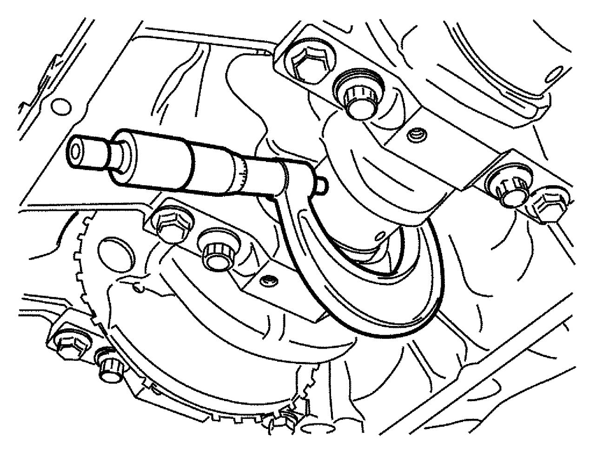
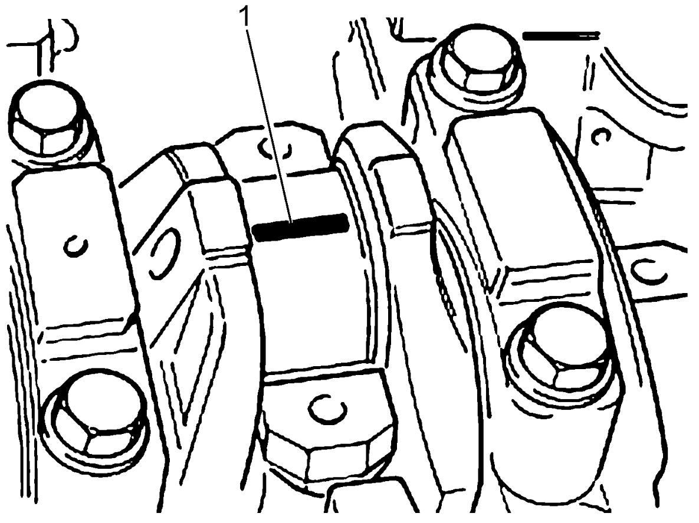
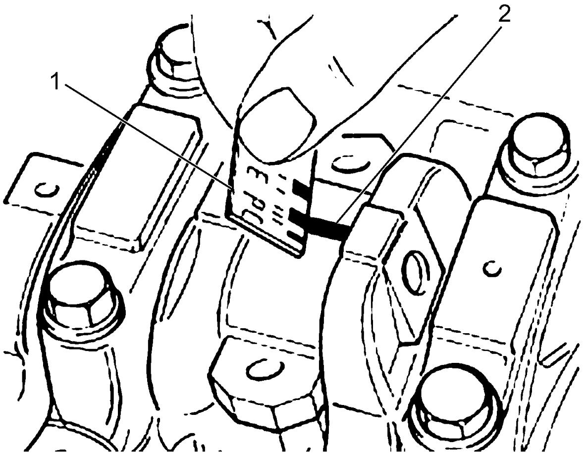
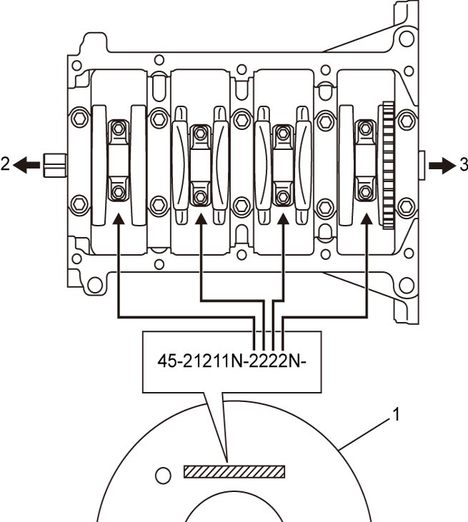
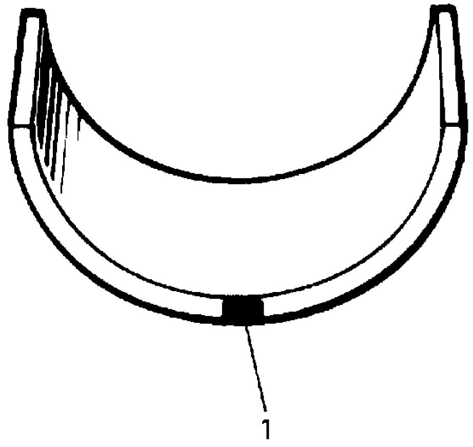

1D
| Crankshaft Pin and Connecting Rod Bearing Inspection |
Crankshaft Pin Diameter
Check crankshaft pin for uneven wear or damage.
Measure crankshaft pin diameter with a micrometer. If crankshaft pin is damaged or worn unevenly or diameter is not as specified, regrind or replace crankshaft.
Crankshaft pin diameter
48.226 – 48.244 mm (1.8986 – 1.8993 in.)

 "Expand image")
Connecting Rod Bearing Visual Inspection
Check bearing shells for signs of fusion, pitting, burn or flaking and observe contact pattern. Bearing shells found in defective condition must be replaced.
Connecting Rod Bearing Clearance
1)Before checking bearing clearance, clean bearing and crankshaft pin.
2)Install bearings in connecting rod and bearing cap.
3)Place a piece of gauging plastic (1) to full width of crankshaft pin as contacted by bearing (parallel to crankshaft), avoiding oil hole.

NOTE:
Do not rotate crankshaft while gauging plastic is fitted.

 "Expand image")
4)Install connecting rod and bearing cap referring to Step 9) of “Installation” under Piston, Piston Ring and Connecting Rod Removal and Installation:D16AA.
5)Remove cap, and using a scale (1) on gauging plastic envelope, measure gauging plastic (2) width at the widest point (clearance).
If clearance is not as specified, replace bearing.
Always replace both upper and lower bearing halves as a set.
If new standard bearing does not produce proper clearance, regrinding crankshaft journal for use of 0.127 mm (0.00500 in.) undersize bearing or replacing crankshaft and connecting rod bearings with new ones will be necessary. After selecting new bearings, recheck clearance.
If clearance is not as specified, replace bearing.
Always replace both upper and lower bearing halves as a set.
If new standard bearing does not produce proper clearance, regrinding crankshaft journal for use of 0.127 mm (0.00500 in.) undersize bearing or replacing crankshaft and connecting rod bearings with new ones will be necessary. After selecting new bearings, recheck clearance.
Connecting rod bearing clearance
Standard: 0.030 – 0.056 mm (0.0012 – 0.0022 in.)

 "Expand image")
Selection of Connecting Rod Bearing
Standard bearing
NOTE:
•If bearing is defective or bearing clearance is not as specified, select a new standard bearing according to the following procedure and install it.
•When replacing crankshaft or connecting rod and its bearings due to any reason, select new standard bearings to be installed referring to numbers stamped on CKP sensor ring.
•When replacing crankshaft or connecting rod and its bearings due to any reason, select new standard bearings to be installed referring to numbers stamped on CKP sensor ring.
1)Check connecting rod big-end inside diameter.
If measured big-end inside diameter is not as specified, replace connecting rod and/or bearing cap.
If measured big-end inside diameter is not as specified, replace connecting rod and/or bearing cap.
Connecting rod big-end inside diameter
51.354 – 51.360 mm (2.0218 – 2.0220 in.)
2)Check crankshaft pin diameter. CKP sensor ring (1) has stamped numbers as shown in figure.
Three kinds of numbers (“1”, “2” and “3”) represent the following crankshaft pin diameter respectively.
For example, stamped “1” indicates that corresponding crankshaft pin diameter is 48.238 – 48.244 mm (1.8991 – 1.8993 in.).
Three kinds of numbers (“1”, “2” and “3”) represent the following crankshaft pin diameter respectively.
For example, stamped “1” indicates that corresponding crankshaft pin diameter is 48.238 – 48.244 mm (1.8991 – 1.8993 in.).
Crankshaft pin diameter
| Category | Crankshaft pin diameter |
|---|---|
| 1 | 48.238 – 48.244 mm (1.8991 – 1.8993 in.) |
| 2 | 48.232 – 48.238 mm (1.8988 – 1.8991 in.) |
| 3 | 48.226 – 48.232 mm (1.8986 – 1.8988 in.) |

 "Expand image")
| 2. | Crankshaft pulley side | 3. | Flywheel side |
3)There are three kinds of standard bearings thickness and they are painted in the following colors.
Each color indicates the following thickness at the center of bearing.
Each color indicates the following thickness at the center of bearing.
Standard size of connecting rod bearing thickness
| Color painted | Bearing thickness |
|---|---|
| Red | 1.538 – 1.542 mm (0.06055 – 0.06071 in.) |
| Blue | 1.541 – 1.545 mm (0.06067 – 0.06083 in.) |
| Yellow | 1.544 – 1.548 mm (0.06079 – 0.06094 in.) |

 "Expand image")
| 1. | Paint |
4)From number stamped on CKP sensor ring, determine new standard bearing to be installed to connecting rod big-end inside, referring to the following table.
For example, if number stamped on CKP sensor ring is “1”, install a new standard bearing painted in “Red” to its connecting rod big-end inside.
For example, if number stamped on CKP sensor ring is “1”, install a new standard bearing painted in “Red” to its connecting rod big-end inside.
Specification of new standard connecting rod bearing size
| Number stamped on CKP sensor ring (Crankshaft pin diameter) | Color painted |
|---|---|
| 1 | Red |
| 2 | Blue |
| 3 | Yellow |
5)Check bearing clearance with newly selected standard bearing referring to Connecting Rod Bearing Clearance.
If clearance is not as specified, use next thicker bearing and recheck clearance.
If clearance is not as specified, use next thicker bearing and recheck clearance.
Undersize bearing (0.127 mm (0.00500 in.))
•There are tree kings of undersize bearing thickness and they are painted in the following colors.

•Regrind crankshaft pin and select undersize bearing to use with it as follows, if necessary.
 "Expand image")
| 1. | Paint |
a.Regrind crankshaft pin to the following finished diameter.
b.Using micrometer, measure reground crankshaft pin diameter.
Measurement should be taken in two directions perpendicular to each other to check for out-of-round.
c.Using crankshaft pin diameter measured above, select an undersize bearing referring to the following table.
Check bearing clearance with newly selected undersize bearing.
Finished journal diameter
48.099 – 48.117 mm (1.8937 – 1.8943 in.)
Reground limit
0.127 mm (0.00500 in.)
Measurement should be taken in two directions perpendicular to each other to check for out-of-round.
c.Using crankshaft pin diameter measured above, select an undersize bearing referring to the following table.
Check bearing clearance with newly selected undersize bearing.
Undersize bearing specification
| Measured crankshaft pin diameter | Color painted |
|---|---|
| 48.111 – 48.117 mm (1.8941 – 1.8943 in.) |
Brown |
| 48.105 – 48.111 mm (1.8938 – 1.8941 in.) |
Green |
| 48.099 – 48.105 mm (1.8937 – 1.8938 in.) |
Black |